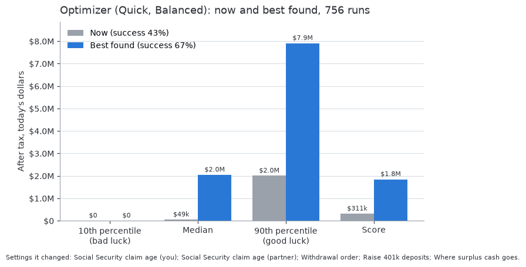
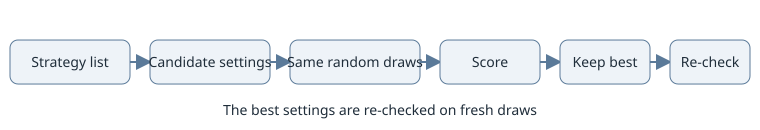

Strategies
Purpose: for anyone weighing a tax strategy; what each choice changes, where to set it and how to compare it.
A strategy is a choice that changes the tax you pay over the years, such as when to claim Social Security or whether to convert Traditional money to Roth. To judge one, save a scenario with it and one without, and open Compare (see Using the toolkit): both run on the same random draws, so the difference comes from the setting. Or let Optimize search for you. Everything here models the law files (Tax law by jurisdiction); it is not tax advice. Rules the model leaves out are in Tax law in the model.
Strategies you can compare today
Choice |
What it changes |
Where to set it |
|---|---|---|
Withdrawal order |
Priority drains accounts in the order you rank them; proportional draws from every account by balance. Required distributions come first either way. |
Accounts tab: strategy and priority; or Optimize |
Traditional or Roth saving |
The share of pay deferred into a Traditional 401k (lowers taxable pay now) against a Roth deposit (taxed now, untaxed later). The employer match goes to the Traditional balance. The Roth IRA part of a deposit shrinks across the income phase-out; a Roth 401k has no income limit. |
Benefits tab (Retirement plan) |
Where surplus cash goes |
How unspent cash (the surplus) is split over cash, Investments and 529 accounts. Investments sales are taxed only on the gain share. |
Accounts tab: surplus sliders; or Optimize |
When to claim Social Security |
The benefit and the year it starts. Taxable benefits count withdrawals and gains, so the claim age can change the tax on the same withdrawals. |
Retirement tab: benefit table (ages 62 to 70) and claim age; or Optimize |
Health premium before or after tax |
A premium paid before tax lowers taxable pay, up to the pay left after Traditional deposits, the dependent care FSA and the HSA taken through payroll; one paid after tax can be itemized above the medical floor. Medicare premiums are always after tax. |
Benefits tab (Medical plan); Medicare on the Retirement tab |
Using an HSA |
Pre-tax HSA contributions lower taxable income (through payroll also Social Security and Medicare tax) and pay qualified healthcare costs untaxed. Contributing what the year’s costs need keeps the balance low; contributing the most lets it grow to pay costs later. |
Benefits tab (Medical plan, HSA) |
Itemizing or the standard deduction |
Chosen each year, whichever is larger. Mortgage interest, state and property tax (with the SALT cap), medical costs and charity can tip it; separate returns must both itemize if either does. From 2026 a return on the standard deduction also deducts cash gifts up to 1,000 (2,000 joint). From 2025 to 2028 each person aged 65 or older adds a 6,000 senior deduction, itemizing or not; it falls by 6% of income above 75,000 (150,000 joint), and separate returns get none. Neither reaches the state tax. |
Expenses tab (tax-deduction rows, Charity, property taxes), Loans tab, Benefits tab (premiums), Healthcare tab |
Filing jointly or separately |
Joint returns use the joint brackets and limits; separate returns use the married-filing-separately brackets, a half SALT cap and a zero Social Security threshold. Each account’s income goes on its owner’s return. |
Setup: filing status |
Home state |
The state brackets, exclusions and add-backs of any of the 50 states or DC. |
Setup: home state |
Paying down a loan |
Extra payments, a refinance or forgiveness change the payoff date, the interest paid and the mortgage interest you can itemize. |
Loans tab |
Cost of care |
Doctor visits and drugs every year, counted while healthcare costs are included. |
Healthcare tab |
The Strategies tab holds three strategies, each off by default: the Roth conversion, the Roth backdoor and the QCD. After them come Relocation (a move to another state, off by default; see Relocation: moving to another state), the starting after-tax basis of the Traditional IRAs, a note on how the home state treats them (How the home state treats the strategies), and warnings for what the model leaves out. The beneficiaries are not a strategy: they sit in the Beneficiaries section of the Benefits tab (see Terminal tax rate).
Roth conversions
What |
Moves Traditional money to Roth in the years you choose, paying tax now to lower later required distributions and taxable Social Security. |
Set it |
Strategies tab: an age window (your age, both ends included), an optional amount per year in today’s dollars, and ceilings that all apply, the lowest winning: a federal bracket top, an IRMAA tier, a Social Security limit, the 0% gains bracket top or a custom AGI. Preset buttons switch the conversion on under one ceiling. |
Modeled |
Required distributions and the year’s withdrawals come first and are never converted. The model converts the largest amount that keeps every ceiling on every return, with the conversion’s own tax paid by further withdrawals, so effects such as the Social Security “torpedo” or a switch to itemizing are exact. With no amount it converts as much as the ceilings allow. The money goes to the owner’s first Roth account and is ordinary income, not cash. |
Limits |
The window follows your age even for a partner’s account (the tab warns). |
The rollover account. If an owner of a Traditional account has no Roth account to receive the money, switching the conversion on adds a Roth IRA called Rollover account (worth 0, usual Roth IRA returns, last withdrawal priority). Switching it off removes the account while it is untouched; editing it in any field makes it your own. A config loaded with the conversion on and no Roth account gets one at load.
Early-retiree ladder. The years between the last paycheck and Social Security or the first RMD often have the lowest taxable income of a lifetime. Set the window to those years and a ceiling such as the top of the 12% or 22% bracket to fill the low brackets each year. Converted money taken out within five years and before 59.5 pays the 10% penalty (see Early withdrawals); Use penalty-free money first draws other money first where it exists. Conversions before the Medicare age raise the income an ACA premium credit is tested on, which the model does not price. From 2026 the credit ends above 400% of the federal poverty level (about 62,600 for one person, 84,600 for two); married couples filing separately get none. The tab warns about both.
Medicare IRMAA and the two-year lookback
The IRMAA surcharge applies whenever a Medicare premium is charged (Part B on, or a Part D premium above zero, on the Retirement tab). It is charged on each return’s AGI from two years earlier, against that later year’s thresholds. So the IRMAA ceiling holds a year’s AGI under the threshold of the premium year it sets. In today’s-value runs the earlier AGI is deflated by expected inflation, so both modes charge alike.
The first two years of a run look back before it. The model estimates that AGI from each member’s pay history on the Income tab (a person with no entry counts today’s pay), and the Retirement tab and the Summary warn that the early IRMAA tier is estimated. The model does not offer an IRMAA appeal (Form SSA-44) after a life-changing event.
To compare a conversion, save one config with it on (a preset sets one ceiling) and one with it off, and pick both in Compare.
Roth backdoor
What |
Fills the Roth IRA room that the income phase-out removes: after-tax cash goes into a Traditional IRA as a nondeductible deposit and is converted to the first Roth IRA in the same year. |
Set it |
Strategies tab: Make a backdoor Roth deposit, with an optional yearly cap in today’s dollars. |
Modeled |
The deposit is the IRA limit (with the catch-up from age 50) times the share
the phase-out removes, for each person who earns, and no more than their pay
less their Traditional deposit. It is paid only from the year’s cash before any
withdrawal and is not income. It shows as |
Pro-rata rule |
With no pre-tax IRA money the conversion is tax free. Otherwise the pre-tax share of the whole IRA pool is taxed (Form 8606) and the basis left carries on. The first year starts from the IRA basis on the Traditional IRA accounts, a fixed dollar amount that loses inflation in today’s-value runs. A Traditional 401k is outside the pool. |
Limits |
A Roth IRA account must exist. A person’s Roth deposit on the Benefits tab that goes into a Roth IRA is held to the part of the IRA limit their income leaves, so the backdoor keeps the rest. IRA amounts set per account share the IRA limit, so the backdoor gets only what is left (the tab warns when that is nothing). |
Qualified charitable distributions (QCD)
Charity rows on the Expenses tab are charged every year as cash leaving the household. A QCD changes how the gift is paid, not the gift.
What |
From age 70.5, pays the year’s giving straight out of the Traditional IRA. The withdrawal is untaxed, counts toward the RMD, and lowers AGI, taxable Social Security and the IRMAA surcharge two years later. |
Set it |
Strategies tab: Pay gifts with a QCD, all of the giving or an amount per year in today’s dollars. |
Modeled |
Never more than the giving, the yearly limit (111,000 per person in 2026, indexed) or what the Traditional IRAs can pay out. Each person’s part comes only from their own Traditional IRAs (never a 401k) while they are old enough and within their own limit. A new IRA is yours until you change it. A QCD counts toward that person’s RMDs together, not the other person’s. The gift is still charged in full, and the QCD part is not a deductible cash gift. |
States |
New Jersey keeps taxing a QCD as pension income (see How the home state treats the strategies). Every other state follows the federal treatment. |
Limits |
A conversion never uses the QCD or the RMD. Whether Form 8606 counts a QCD in the IRA distributions it reads is unconfirmed. |
In RMD years a QCD is the cheapest way to give: the RMD is taken either way, and the part the QCD covers leaves AGI. It also beats the 1,000 (2,000 joint) non-itemizer gift deduction. Before the RMD age it still lowers AGI but draws down the Traditional IRA earlier.
Required minimum distributions
Each Traditional account’s RMD is the prior year-end balance divided by the IRS Uniform Lifetime Table period (27.4 at age 72 down to 2.0 at 120, then 2.0). It starts at 73, or 75 for someone born in 1960 or later, and uses the account owner’s own age and birth year (a new 401k or IRA is yours). A younger partner’s RMD years may fall past the plan end, which follows your age. RMDs come before any other withdrawal and count toward the year’s need. The Joint and Last Survivor Table (a spouse more than ten years younger as sole beneficiary, giving smaller RMDs) is not built. Each year’s schedule is under the chart of Deposits and withdrawals (see Deposits and withdrawals).
Terminal tax rate
Strategies are compared after tax, by what the beneficiaries keep. The rule and its example are in Beneficiaries; this section is the short version.
Payout. Traditional money left at the end is taxed as each beneficiary withdraws it, at the federal and their state brackets on top of their other income. The default, Over 10 years, spreads the share over 10 equal yearly withdrawals (the 10-year inherited-account rule). All at once takes it in the year after the death, which usually reaches higher brackets. Roth money, investments and homes pass untaxed (basis steps up at death); each home still owned is treated as sold on the last day, less selling costs.
Beneficiaries. Set them in the Beneficiaries section of the Benefits tab: name, share (the shares must total 100%), other income, filing status, state and payout. The default is one beneficiary with the whole estate. They change how the final value is measured, not the plan.
Estate taxes. The federal estate tax (40% above the basic exclusion, 15,000,000 a person in 2026, doubled for a joint return, indexed) applies to the gross estate. The state you live in at the end charges its estate tax on the gross estate and its inheritance tax on each share, at the rate for children (tables in State estate and inheritance taxes). The federal deduction for state death taxes is not modeled.
A typed rate. The beneficiaries’ tax rate box (0% to 50%) replaces the payouts’ tax with one flat rate on all Traditional money. While blank, its caption shows the model’s estimate, read from one seeded run with every strategy off: the trend of each year’s tax rate on Traditional withdrawals over the last 15 years of the run (at least 10 such years needed), clamped to 0% to 50% and rounded to a half point. With fewer such years it uses the average tax rate over the first five retirement years, and with no usable year it uses 25%. Use the beneficiaries’ payout clears a typed rate.
Where it shows. Summary shows What beneficiaries keep: each run’s final net worth less estate and inheritance taxes, the beneficiaries’ income tax and the homes’ selling costs, as the median with the middle half (25th to 75th percentile). Compare uses the first scenario’s saved rate for every row, or with none each row’s own payout.
The estimate is noisy because it comes from one run, and it can step when an input change moves a household across the 10-year line.
See also How the home state treats the strategies in Tax law in the model.
Relocation: moving to another state
A move to another state is a plan of its own, off by default. The full treatment is in States: taxes, living costs and moving (Moving at retirement); the Relocation section of the Strategies tab holds the settings.
Setting |
Meaning |
|---|---|
Move to another state |
The switch. A move to your home state, or with no state, changes nothing. |
State you move to |
One of the 51 states, such as NJ - New Jersey. |
Move at your age |
Blank shows your Social Security claim age (or, with no benefit, the age your pay stops, or now if you are retired). |
Home follows me |
On by default: the old home is sold and a comparable one bought in the new state. Off keeps the old home as a second home. |
Both of you move at the start of the move year. From then, state income tax, state estate and inheritance taxes, car and health costs, sales tax and your home change as States: taxes, living costs and moving describes. A move changes no random draw, so a config with a move and one without compare on the same draws.
Finding the best settings
The Optimize view under Outputs searches the strategy settings for the best score and shows it beside your current settings. It is a search on the model, not advice: nothing changes until you apply it. How to run it is in The app.


The current settings against the best settings the optimizer found.


How the optimizer searches.
What is searched.
Setting |
What is tried |
|---|---|
Roth conversion |
Off, or one ceiling (a bracket top from 10% to 32% that your table has, an IRMAA threshold, the 0% gains limit or a Social Security limit), then the start and end ages; finer efforts step the ages by one year and add a second ceiling. |
Social Security claim age |
Each person’s ages from 62 to 70. |
Withdrawal order |
The groups cash, Investments, Traditional and Roth in any order, each group’s accounts in their own order, or proportional. |
Surplus cash |
The shares of cash and Investments accounts, always totalling 100%: first a coarse grid, then steps that move 5% from one account to another. A locked slider keeps its share. |
Backdoor and QCD |
On or off. Their amounts stay as you set them. |
Filing status (couples) |
Joint and separate, searched right after the state and before the rest; greyed out with no partner. Separate returns often cost more federal tax, but some states let each spouse claim their own exclusions. |
Relocation state |
Each state you tick, with staying put always a candidate (below). |
401k deposits and new accounts |
Seven options, all on by default (below). |
Not searched: spending, the salary stop age, lowering a deposit’s total, returns, healthcare choices and the beneficiaries’ payouts (over 10 years never leaves the beneficiaries less than all at once; see known findings). These are life choices more than strategies. A strategy that cannot help the household is skipped with the reason.
401k deposits and new accounts.
Raise 401k deposits: each person’s Traditional share of pay (tried at 25, 50, 75 and 100% of the gap to what their 401k limit allows) and, when their Roth deposit goes into a Roth 401k, their Roth share up to its 401k room. Deposits only go up.
Traditional vs Roth 401k: for each paid person with both a Traditional and a Roth 401k, their 401k deposits moved between the two at the same total: all Traditional, three quarters, half, a quarter and all Roth, and on Standard and Thorough 5% of the total either way. The simulation weighs the deduction now against tax-free withdrawals later. With the household plan the model matches only the Traditional deposit, so the Traditional share never drops below the share the match needs; real plans often match Roth deposits too. Greyed out when nobody has both.
Add an IRA: a Roth or Traditional IRA for a paid person with no 401k. Greyed out with the reason (needs per-account deposits, no one has earned pay) when it cannot apply. A Roth IRA above the income range is left out (the backdoor covers it). A spousal IRA is not modeled.
Add a 529 per child: for each child under college age with a college cost and no 529, fed from surplus cash.
Add Savings, Add CD & Bonds, Add Investments: when the household holds none and its settings leave surplus cash.
A new account starts at $0, is named like Roth IRA (added) and is placed last in its withdrawal group. The search adds at most two accounts on Quick and three on Standard and Thorough; finer efforts also try removing one. A new account that gets under 1% of the surplus is dropped. Its returns come from draws of its own, so other accounts’ draws are unchanged. A later run of the saved scenario can differ slightly from the search. An option that cannot do anything for your settings is unticked and greyed out with its reason, and the search lists it as skipped.
Relocation state. Tick the states to try, up to 5 per search (None clears the ticks). Each is tried as a retirement move at the move age under Strategies, Relocation (your claim age when blank). The state is the first step of each pass, so the other strategies are tuned inside it. Ticking only your own state skips it. Under the list the page shows what the ticked states add, for example 3 states and staying put: up to 672 more runs, up to 2 minutes more (estimate) (see the estimates). Homes and rent periods that start at or after the move take the state tried; earlier ones keep their states, and Home follows me stays as set. The result names the state, for example Retire in Florida, move at 65, or Stay in NJ, with a note that a move is valued on taxes and costs, not climate, family or healthcare access. Apply turns Relocation on with the best state, or off when staying put wins. See Letting the optimizer compare states.
The score. Each run’s value is its after-tax final worth in today’s dollars, what the beneficiaries keep. The score is:
the typical outcome: runs sorted by value and averaged with weights that fall with distance from the median run, so a few huge outcomes cannot pull it;
plus a success bonus: the share of runs that do not run out, times a weight, times the current settings’ typical outcome (at least 100,000);
less a spread penalty: a weight times the distance between the 10th and the 90th percentile.
There is no hard limit on the failure rate; failures count through the success bonus only. The risk preference sets the weights:
Preference |
Success weight |
Spread penalty |
In plain words |
|---|---|---|---|
Growth-leaning |
0.5 |
0.05 |
Ten more points of success are worth a 5% bigger typical outcome; each dollar of spread costs 5 cents. |
Balanced (default) |
1.0 |
0.10 |
Ten more points of success are worth a 10% bigger typical outcome; each dollar of spread costs 10 cents. |
Cautious |
2.0 |
0.20 |
Ten more points of success are worth a 20% bigger typical outcome; each dollar of spread costs 20 cents. |
The breakdown shows each part now and for the best. Scores compare only within one search.
Same draws and the re-check. Every setting faces the same random draws, so a difference comes from the settings. The search moves one strategy at a time with the others held and compares candidates in rounds: all on a few runs, the best third (at least two) and your current pick on more, the best two on the most. A new setting replaces the current pick only when its score is higher by more than half a percent of the reference. The winner is then run again with your current settings on one or two fresh sets of draws, and the result says whether it held up. When it did not, the search drops its last step and re-checks the settings before it on the same fresh draws, up to three earlier settings, and keeps the first that holds up; the result names the steps dropped. Each is still held to the same margin, but trying several on the same draws makes a lucky pass a little more likely. When none holds up, the winner is kept: it is likely luck and can still be applied, with a warning.
Effort.
Effort |
Runs per round |
Passes |
Most it will use |
|---|---|---|---|
Quick (start) |
6, 14 and 30 |
1 |
650 runs, 6.5 minutes |
Standard |
8, 24 and 80 |
2, with finer steps |
2,500 runs, 25 minutes |
Thorough |
16, 48 and 160 |
3 |
9,000 runs, 90 minutes |
A search that may add accounts gets 300, 900 or 2,500 more runs (by effort), one that may raise 401k deposits 200, 500 or 1,200 more, one that may move them between Traditional and Roth 100, 300 or 800 more, and each ticked state 50, 224 or 672 more. The time cap is three times the budget at 0.2 s a run, a safety stop. Stop shows the best so far; Cancel keeps nothing. A search that uses its run budget before finishing asks whether to continue: Continue carries on with the budget raised by the effort’s own budget (no setting is run twice), and Stop and keep best so far re-checks the best on fresh draws.
Estimates. Each Effort label says how long a search should take on your device, for example Quick (estimate 25 s to 40 s); until your options are known it shows the run budget instead. The low end is one pass in which no step changes anything; the high end allows steps that do change something and so call for another pass, plus the re-check. The seconds are those runs times a short timed calibration of your current settings on your device. The search keeps every run it made, so a later pass does not repeat a candidate when nothing else changed. While it runs, the time left is the measured time per run times the runs still expected; it grows when a step finds something better and shrinks when one does not.
Limits. The search finds a local best: a better setting that needs two strategies to move at once can be missed (the second pass catches some). 30 to 80 runs resolve only larger gains, so a small real gain may read did not hold up. No one dies in the model, so a later claim and conversions are valued as if both of you live to the end. Every setting runs with the zero-value rollover account a conversion adds, so settings applied with the conversion off can run slightly differently later.
The result. One card per recommended change: the setting, its value now and found, and the score that change added when the search took it (gains need not add up to the total improvement shown under the cards). Only improving changes are recommended; the rest fold into N other settings kept as they are.
Apply. The result also lists each setting Apply writes. Apply these settings changes the settings at once (not when your settings changed since the search) and Undo takes them back. Only the settings the search moves can be written, and only as it moves them: a deposit or the plan’s share only goes up, an existing account keeps every field but its surplus share, and a new account starts at $0.
Known findings. General results about the search, true for any household, are kept so the optimizer does not spend runs re-learning them. Each is applied (the optimizer acts on it), built-in (a rule its code already holds, such as skipping a claim age for someone already claiming) or a hypothesis (recorded with what was measured and never applied). The one applied finding removes the beneficiaries’ payout from the search: spreading over 10 years always leaves the beneficiaries at least as much, and leaving it out kept every winner while a Quick search of the pinned profiles ran 30 fewer runs.
Limitations of the strategies
No one dies in the model, so the survivor’s single brackets and surcharge thresholds, the main reason a married couple converts, never apply; a conversion’s value is understated (the tab warns).
Early-withdrawal penalties follow the account order unless Use penalty-free money first is on; SEPP and the other exceptions are not modelled.
The after-tax IRA basis (Form 8606) is one household figure, so the taxed part of Traditional income is spread over the returns by what each owner’s accounts paid out. The backdoor deposit goes to the first Roth IRA whoever earns it.
The Net Investment Income Tax counts only interest and realized gains: a conversion that lifts income above its threshold pulls them into it, but dividends are not modelled, so a dividend-heavy household’s conversion costs more than shown.
No IRMAA appeal and no ACA premium credit.
See the Law backlog in Tax law in the model for every rule the model does not charge yet, with why it matters.